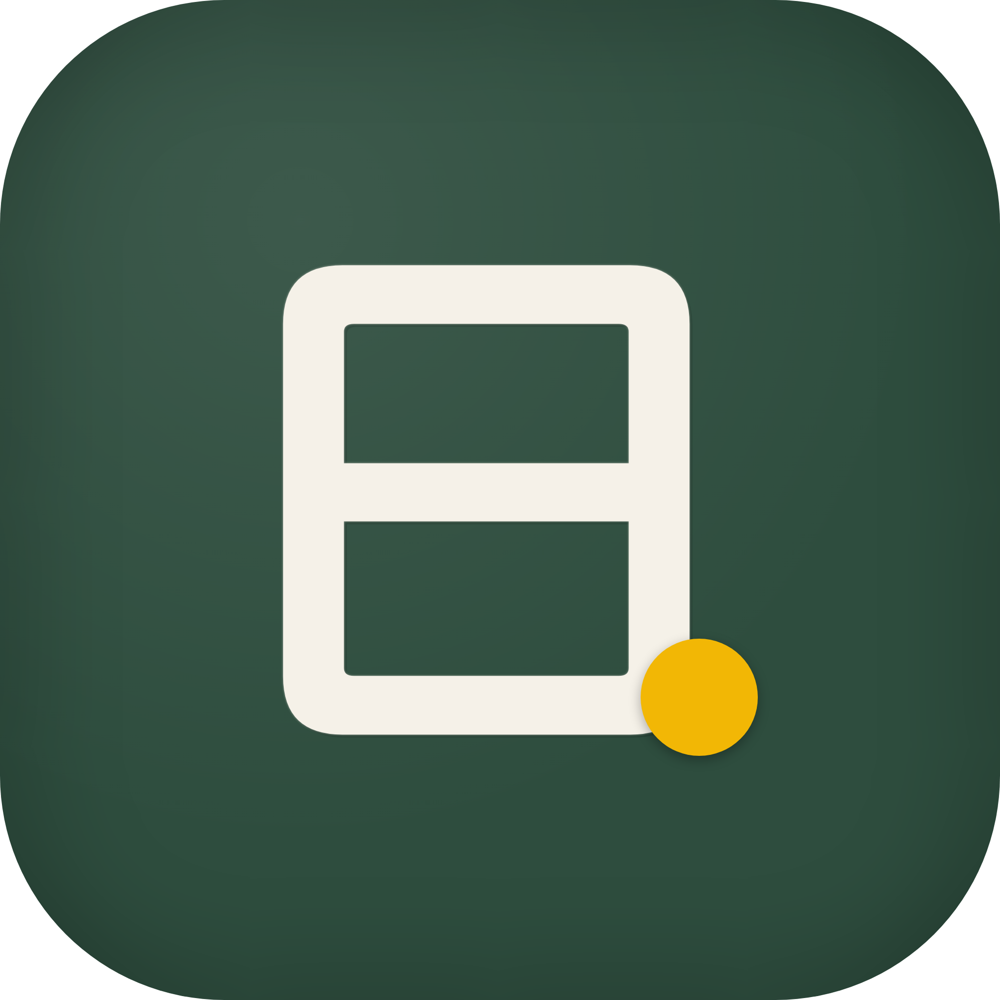

ニッチョク。名前を入れてボタンを押すだけ。離したい子・前にしたい子などの配慮もまるごとおまかせ。子どもの情報は端末の外に出ません。
ひらく →学年をえらんでボタンを押すだけ。毎回ちがう問題と丸つけ用の答えも自動生成。宿題・朝学・小テストにそのまま印刷。
ひらく →教室の黒板みたいなタイマー。音を消しても“光”で終わりが伝わるから、聴覚過敏の子にも安心。授業の流れを連続でセットすれば自動で次へ。
ひらく →名簿と係を入れてボタンを押すだけ。なるべく公平に・全員にいきわたるよう自動で決定。そのまま黒板に映す・印刷して掲示。もう一度押せば前回と違う担当でローテーション。
ひらく →